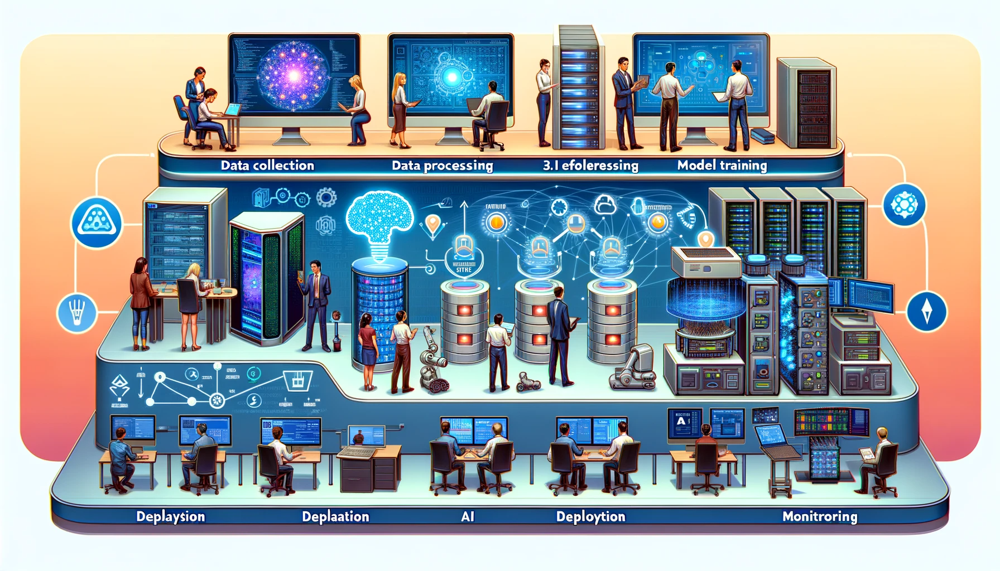
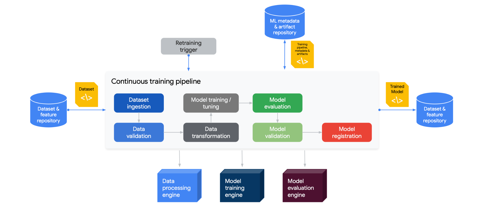
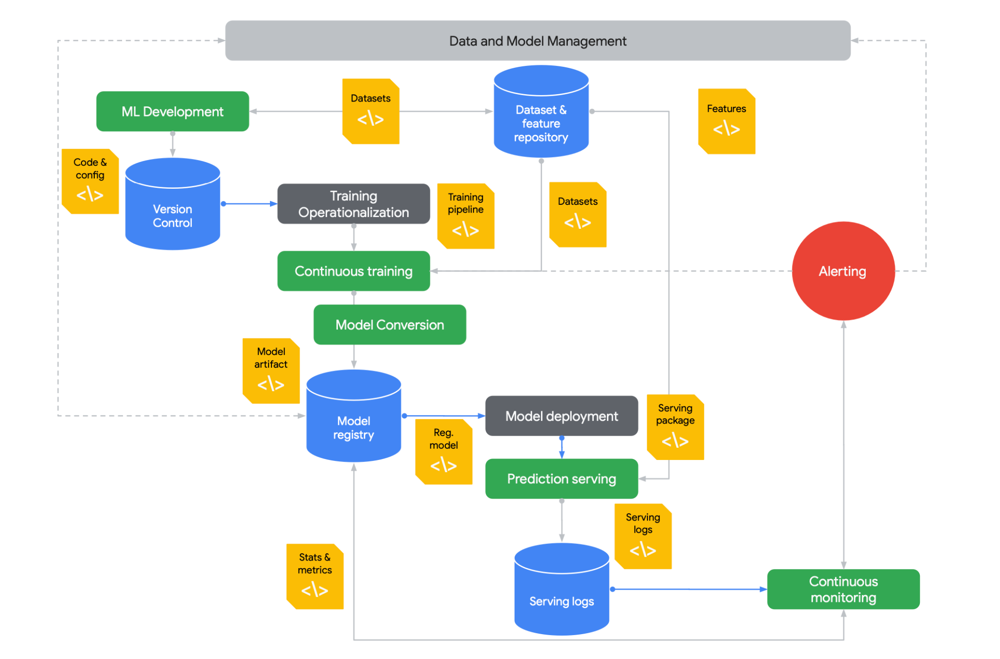
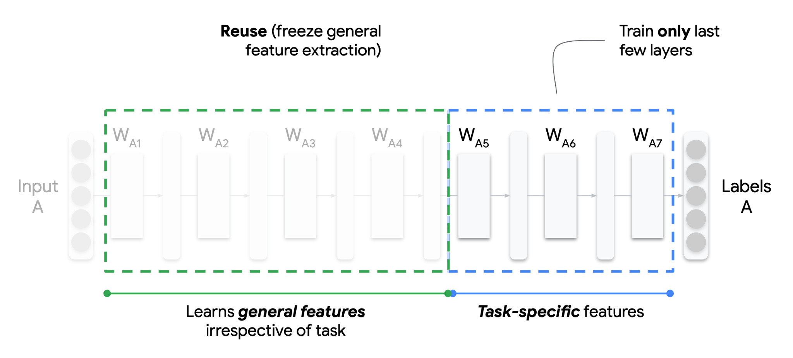
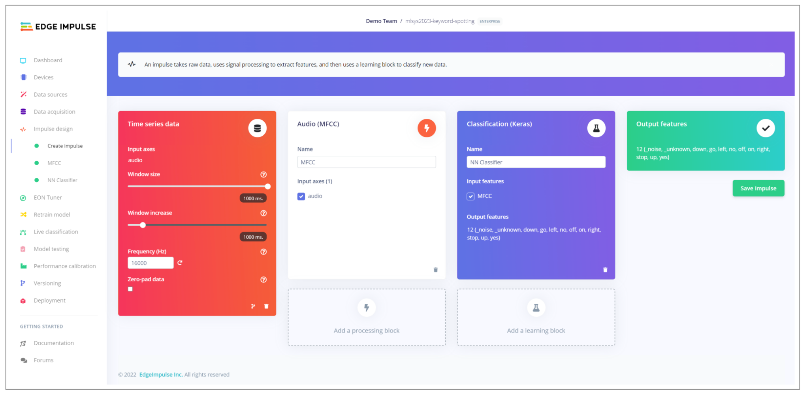
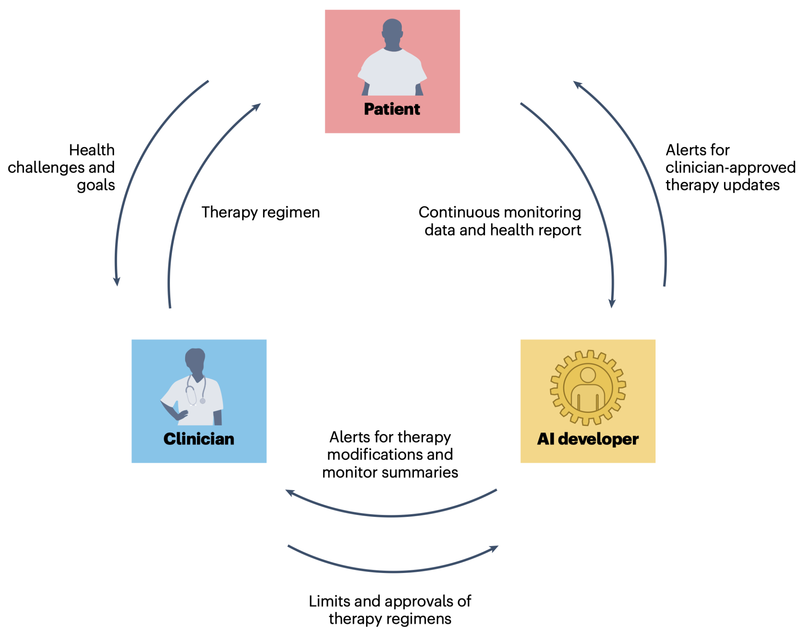
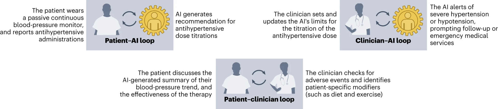

14 Embedded AIOps

This chapter explores the practices and architectures needed to effectively develop, deploy, and manage ML models across their entire lifecycle. We examine the various phases of the ML process including data collection, model training, evaluation, deployment, and monitoring. The importance of automation, collaboration, and continuous improvement is also discussed. We contrast different environments for ML model deployment, from cloud servers to embedded edge devices, and analyze their distinct constraints. Through concrete examples, we demonstrate how to tailor ML system design and operations for reliable and optimized model performance in any target environment. The goal is to provide readers with a comprehensive understanding of ML model management so they can successfully build and run ML applications that sustainably deliver value.
Understand what is MLOps and why it is needed
Learn the architectural patterns for traditional MLOps
Contrast traditional vs. embedded MLOps across the ML lifecycle
Identify key constraints of embedded environments
Learn strategies to mitigate embedded ML challenges
Examine real-world case studies demonstrating embedded MLOps principles
Appreciate the need for holistic technical and human approaches
14.1 Introduction
Machine Learning Operations (MLOps), is a systematic approach that combines machine learning (ML), data science, and software engineering to automate the end-to-end ML lifecycle. This includes everything from data preparation and model training to deployment and maintenance. MLOps ensures that ML models are developed, deployed, and maintained efficiently and effectively.
Let’s start by taking a general example (i.e., non-edge ML) case. Consider a ridesharing company that wants to deploy a machine-learning model to predict rider demand in real time. The data science team spends months developing a model, but when it’s time to deploy, they realize it needs to be compatible with the engineering team’s production environment. Deploying the model requires rebuilding it from scratch - costing weeks of additional work. This is where MLOps comes in.
With MLOps, there are protocols and tools in place to ensure that the model developed by the data science team can be seamlessly deployed and integrated into the production environment. In essence, MLOps removes friction during the development, deployment, and maintenance of ML systems. It improves collaboration between teams through defined workflows and interfaces. MLOps also accelerates iteration speed by enabling continuous delivery for ML models.
For the ridesharing company, implementing MLOps means their demand prediction model can be frequently retrained and deployed based on new incoming data. This keeps the model accurate despite changing rider behavior. MLOps also allows the company to experiment with new modeling techniques since models can be quickly tested and updated.
Other MLOps benefits include enhanced model lineage tracking, reproducibility, and auditing. Cataloging ML workflows and standardizing artifacts - such as logging model versions, tracking data lineage, and packaging models and parameters - enables deeper insight into model provenance. Standardizing these artifacts facilitates tracing a model back to its origins, replicating the model development process, and examining how a model version has changed over time. This also facilitates regulation compliance, which is especially critical in regulated industries like healthcare and finance where being able to audit and explain models is important.
Major organizations adopt MLOps to boost productivity, increase collaboration, and accelerate ML outcomes. It provides the frameworks, tools, and best practices to manage ML systems throughout their lifecycle effectively. This results in better-performing models, faster time-to-value, and sustained competitive advantage. As we explore MLOps further, consider how implementing these practices can help address embedded ML challenges today and in the future.
14.2 Historical Context
MLOps has its roots in DevOps, which is a set of practices that combines software development (Dev) and IT operations (Ops) to shorten the development lifecycle and provide continuous delivery of high-quality software. The parallels between MLOps and DevOps are evident in their focus on automation, collaboration, and continuous improvement. In both cases, the goal is to break down silos between different teams (developers, operations, and, in the case of MLOps, data scientists and ML engineers) and to create a more streamlined and efficient process. It is useful to understand the history of this evolution to better understand MLOps in the context of traditional systems.
14.2.1 DevOps
The term “DevOps” was first coined in 2009 by Patrick Debois, a consultant and Agile practitioner. Debois organized the first DevOpsDays conference in Ghent, Belgium, in 2009, which brought together development and operations professionals to discuss ways to improve collaboration and automate processes.
DevOps has its roots in the Agile movement, which began in the early 2000s. Agile provided the foundation for a more collaborative approach to software development and emphasized small, iterative releases. However, Agile primarily focused on collaboration between development teams. As Agile methodologies became more popular, organizations realized the need to extend this collaboration to operations teams as well.
The siloed nature of development and operations teams often led to inefficiencies, conflicts, and delays in software delivery. This need for better collaboration and integration between these teams led to the DevOps movement. In a sense, DevOps can be seen as an extension of the Agile principles to include operations teams.
The key principles of DevOps include collaboration, automation, continuous integration and delivery, and feedback. DevOps focuses on automating the entire software delivery pipeline, from development to deployment. It aims to improve the collaboration between development and operations teams, utilizing tools like Jenkins, Docker, and Kubernetes to streamline the development lifecycle.
While Agile and DevOps share common principles around collaboration and feedback, DevOps specifically targets the integration of development and IT operations - expanding Agile beyond just development teams. It introduces practices and tools to automate software delivery and enhance the speed and quality of software releases.
14.2.2 MLOps
MLOps, on the other hand, stands for MLOps, and it extends the principles of DevOps to the ML lifecycle. MLOps aims to automate and streamline the end-to-end ML lifecycle, from data preparation and model development to deployment and monitoring. The main focus of MLOps is to facilitate collaboration between data scientists, data engineers, and IT operations, and to automate the deployment, monitoring, and management of ML models. Some key factors led to the rise of MLOps.
- Data drift: Data drift degrades model performance over time, motivating the need for rigorous monitoring and automated retraining procedures provided by MLOps.
- Reproducibility: The lack of reproducibility in machine learning experiments motivated the need for MLOps systems to track code, data, and environment variables to enable reproducible ML workflows.
- Explainability: The black box nature and lack of explainability of complex models motivated the need for MLOps capabilities to increase model transparency and explainability.
- Monitoring: The inability to reliably monitor model performance post-deployment highlighted the need for MLOps solutions with robust model performance instrumentation and alerting.
- Friction: The friction in manually retraining and deploying models motivated the need for MLOps systems that automate machine learning deployment pipelines.
- Optimization: The complexity of configuring infrastructure for machine learning motivated the need for MLOps platforms with optimized, ready-made ML infrastructure.
While both DevOps and MLOps share the common goal of automating and streamlining processes, they differ in their focus and challenges. DevOps primarily deals with the challenges of software development and IT operations. In contrast, MLOps deals with the additional complexities of managing ML models, such as data versioning, model versioning, and model monitoring. MLOps also requires collaboration between various stakeholders, including data scientists, data engineers, and IT operations.
While DevOps and MLOps share similarities in their goals and principles, they differ in their focus and challenges. DevOps focuses on improving the collaboration between development and operations teams and automating software delivery. In contrast, MLOps focuses on streamlining and automating the ML lifecycle and facilitating collaboration between data scientists, data engineers, and IT operations.
Here is a table that summarizes them side by side.
| Aspect | DevOps | MLOps |
|---|---|---|
| Objective | Streamlining software development and operations processes | Optimizing the lifecycle of machine learning models |
| Methodology | Continuous Integration and Continuous Delivery (CI/CD) for software development | Similar to CI/CD but focuses on machine learning workflows |
| Primary Tools | Version control (Git), CI/CD tools (Jenkins, Travis CI), Configuration management (Ansible, Puppet) | Data versioning tools, Model training and deployment tools, CI/CD pipelines tailored for ML |
| Primary Concerns | Code integration, Testing, Release management, Automation, Infrastructure as code | Data management, Model versioning, Experiment tracking, Model deployment, Scalability of ML workflows |
| Typical Outcomes | Faster and more reliable software releases, Improved collaboration between development and operations teams | Efficient management and deployment of machine learning models, Enhanced collaboration between data scientists and engineers |
14.3 Key Components of MLOps
In this chapter, we will provide an overview of the core components of MLOps, an emerging set of practices that enables robust delivery and lifecycle management of ML models in production. While some MLOps elements like automation and monitoring were covered in previous chapters, we will integrate them into an integrated framework and expand on additional capabilities like governance. Additionally, we will describe and link to popular tools used within each component, such as LabelStudio for data labeling. By the end, we hope that you will understand the end-to-end MLOps methodology that takes models from ideation to sustainable value creation within organizations.
14.3.1 Data Management
Robust data management and data engineering actively empower successful MLOps implementations. Teams properly ingest, store, and prepare raw data from sensors, databases, apps, and other systems for model training and deployment.
Teams actively track changes to datasets over time using version control with Git and tools like GitHub or GitLab. Data scientists collaborate on curating datasets by merging changes from multiple contributors. Teams can review or roll back each iteration of a dataset if needed.
Teams meticulously label and annotate data using labeling software like LabelStudio, which enables distributed teams to work on tagging datasets together. As the target variables and labeling conventions evolve, teams maintain accessibility to earlier versions.
Teams store the raw dataset and all derived assets on cloud storage services like Amazon S3 or Google Cloud Storage which provide scalable, resilient storage with versioning capabilities. Teams can set granular access permissions.
Robust data pipelines created by teams automate the extraction, joining, cleansing and transformation of raw data into analysis-ready datasets. Prefect, Apache Airflow, dbt are workflow orchestrators that allow engineers to develop flexible, reusable data processing pipelines.
For instance, a pipeline may ingest data from PostgreSQL databases, REST APIs, and CSVs stored on S3. It can filter, deduplicate, and aggregate the data, handle errors, and save the output to S3. The pipeline can also push the transformed data into a feature store like Tecton or Feast for low-latency access.
In an industrial predictive maintenance use case, sensor data is ingested from devices into S3. A Prefect pipeline processes the sensor data, joining it with maintenance records. The enriched dataset is stored in Feast so models can easily retrieve the latest data for training and predictions.
14.3.2 CI/CD Pipelines

Continuous integration and continuous delivery (CI/CD) pipelines actively automate the progression of ML models from initial development into production deployment. Adapted for ML systems, CI/CD principles empower teams to rapidly and robustly deliver new models with minimized manual errors.
CI/CD pipelines (see Figure 14.1) orchestrate key steps, including checking out new code changes, transforming data, training and registering new models, validation testing, containerization, deploying to environments like staging clusters, and promoting to production. Teams leverage popular CI/CD solutions like Jenkins, CircleCI and GitHub Actions to execute these MLOps pipelines, while Prefect, Metaflow and Kubeflow offer ML-focused options.
For example, when a data scientist checks improvements to an image classification model into a GitHub repository, this actively triggers a Jenkins CI/CD pipeline. The pipeline reruns data transformations and model training on the latest data, tracking experiments with MLflow. After automated validation testing, teams deploy the model container to a Kubernetes staging cluster for further QA. Once approved, Jenkins facilitates a phased rollout of the model to production with canary deployments to catch any issues. If anomalies are detected, the pipeline enables teams to roll back to the previous model version gracefully.
By connecting the disparate steps from development to deployment under continuous automation, CI/CD pipelines empower teams to iterate and deliver ML models rapidly. Integrating MLOps tools like MLflow enhances model packaging, versioning, and pipeline traceability. CI/CD is integral for progressing models beyond prototypes into sustainable business systems.
14.3.3 Model Training
In the model training phase, data scientists actively experiment with different ML architectures and algorithms to create optimized models that effectively extract insights and patterns from data. MLOps introduces best practices and automation to make this iterative process more efficient and reproducible.
Modern ML frameworks like TensorFlow, PyTorch and Keras provide pre-built components that simplify designing neural networks and other model architectures. Data scientists leverage built-in modules for layers, activations, losses, etc. and high-level APIs like Keras to focus more on model architecture.
MLOps enables teams to package model training code into reusable, tracked scripts and notebooks. As models are developed, capabilities like hyperparameter tuning, neural architecture search and automatic feature selection rapidly iterate to find the best-performing configurations.
Teams put training code under version control using Git and host it in repositories like GitHub to track changes over time. This allows seamless collaboration between data scientists.
Notebooks like Jupyter make an excellent environment for interactive model development. The notebooks contain data ingestion, preprocessing, model declaration, training loop, evaluation, and export code in one reproducible document.
Finally, teams orchestrate model training as part of a CI/CD pipeline for automation. For instance, a Jenkins pipeline can trigger a Python script to load new training data, retrain a TensorFlow classifier, evaluate model metrics, and automatically register the model if performance thresholds are met.
An example workflow has a data scientist using a PyTorch notebook to develop a CNN model for image classification. The fastai library provides high-level APIs to simplify training CNNs on image datasets. The notebook trains the model on sample data, evaluates accuracy metrics, and tunes hyperparameters like learning rate and layers to optimize performance. This reproducible notebook is version-controlled and integrated into a retraining pipeline.
Automating and standardizing model training empowers teams to accelerate experimentation and achieve the rigor needed for production of ML systems.
14.3.4 Model Evaluation
Before deploying models, teams perform rigorous evaluation and testing to validate meeting performance benchmarks and readiness for release. MLOps introduces best practices around model validation, auditing and canary testing.
Teams typically evaluate models against holdout test datasets not used during training. The test data originates from the same distribution as production data. Teams calculate metrics like accuracy, AUC, precision, recall, and F1 score.
Teams also track the same metrics over time against test data samples. If evaluation data comes from live production streams, this catches data drifts over time that degrade model performance.
Human oversight for model release remains important. Data scientists review performance across key segments and slices. Error analysis helps identify model weaknesses to guide enhancement. Teams apply fairness and bias detection techniques.
Canary testing releases a model to a small subset of users to evaluate real-world performance before wide deployment. Teams incrementally route traffic to the canary release while monitoring for issues.
For example, a retailer evaluates a personalized product recommendation model against historical test data, reviewing accuracy and diversity metrics. Teams also calculate metrics on live customer data over time, detecting decreased accuracy over the last 2 weeks. Before full rollout, the new model is released to 5% of web traffic to ensure no degradation.
Automating evaluation and canary releases reduces deployment risks. But human review remains critical to assess less quantifiable dynamics of model behavior. Rigorous pre-deployment validation provides confidence in putting models into production.
14.3.5 Model Deployment
To reliably deploy ML models to production, teams need to properly package, test and track them. MLOps introduces frameworks and procedures to actively version, deploy, monitor and update models in sustainable ways.
Teams containerize models using Docker which bundles code, libraries and dependencies into a standardized unit. Containers enable smooth portability across environments.
Frameworks like TensorFlow Serving and BentoML help serve predictions from deployed models via performance-optimized APIs. These frameworks handle versioning, scaling and monitoring.
Teams first deploy updated models to staging or QA environments for testing before full production rollout. Shadow or canary deployments route a sample of traffic to test model variants. Teams incrementally increase access to new models.
Teams build robust rollback procedures in case issues emerge. Rollbacks revert to the last known good model version. Integration with CI/CD pipelines simplifies redeployment if needed.
Teams carefully track model artifacts like scripts, weights, logs and metrics for each version with ML metadata tools like MLflow. This maintains lineage and auditability.
For example, a retailer containerizes a product recommendation model in TensorFlow Serving and deploys it to a Kubernetes staging cluster. After monitoring and approving performance on sample traffic, Kubernetes shifts 10% of production traffic to the new model. If no issues are detected after a few days, the new model takes over 100% of traffic. But teams keep the previous version accessible for rollback if needed.
Model deployment processes enable teams to make ML systems resilient in production by accounting for all transition states.
14.3.6 Infrastructure Management
MLOps teams heavily leverage infrastructure as code (IaC) tools and robust cloud architectures to actively manage the resources needed for development, training and deployment of ML systems.
Teams use IaC tools like Terraform, CloudFormation and Ansible to programmatically define, provision and update infrastructure in a version controlled manner. For MLOps, teams widely use Terraform to spin up resources on AWS, GCP and Azure.
For model building and training, teams dynamically provision compute resources like GPU servers, container clusters, storage and databases through Terraform as needed by data scientists. Code encapsulates and preserves infrastructure definitions.
Containers and orchestrators like Docker and Kubernetes provide means for teams to package models and reliably deploy them across different environments. Containers can be predictably spun up or down automatically based on demand.
By leveraging cloud elasticity, teams scale resources up and down to meet spikes in workloads like hyperparameter tuning jobs or spikes in prediction requests. Auto-scaling enables optimized cost efficiency.
Infrastructure spans on-prem, cloud and edge devices. A robust technology stack provides flexibility and resilience. Monitoring tools give teams observability into resource utilization.
For example, a Terraform config may deploy a GCP Kubernetes cluster to host trained TensorFlow models exposed as prediction microservices. The cluster scales up pods to handle increased traffic. CI/CD integration seamlessly rolls out new model containers.
Carefully managing infrastructure through IaC and monitoring enables teams to prevent bottlenecks in operationalizing ML systems at scale.
14.3.7 Monitoring
MLOps teams actively maintain robust monitoring to sustain visibility into ML models deployed in production. Monitoring continuously provides insights into model and system performance so teams can rapidly detect and address issues to minimize disruption.
Teams actively monitor key model aspects including analyzing samples of live predictions to track metrics like accuracy and confusion matrix over time.
When monitoring performance, it is important for teams to profile incoming data to check for model drift - a steady decline in model accuracy over time after production deployment. Model drift can occur in one of two ways: concept drift and data drift. Concept drift refers to a fundamental change observed in the relationship between the input data and the target outcomes. For instance, as the COVID-19 pandemic progressed e-commerce and retail sites had to correct their model recommendations, since purchase data was overwhelmingly skewed towards items like hand sanitizer. Data drift describes changes in the distribution of data over time. For example, image recognition algorithms used in self-driving cars will need to account for seasonality in observing their surroundings. Teams also track application performance metrics like latency and errors for model integrations.
From an infrastructure perspective, teams monitor for capacity issues like high CPU, memory and disk utilization as well as system outages. Tools like Prometheus, Grafana and Elastic enable teams to actively collect, analyze, query and visualize diverse monitoring metrics. Dashboards make dynamics highly visible.
Teams configure alerting for key monitoring metrics like accuracy declines and system faults to enable proactively responding to events that threaten reliability. For example, drops in model accuracy trigger alerts for teams to investigate potential data drift and retrain models using updated, representative data samples.
Comprehensive monitoring enables teams to maintain confidence in model and system health after deployment. It empowers teams to catch and resolve deviations through data-driven alerts and dashboards preemptively. Active monitoring is essential for maintaining highly available, trustworthy ML systems.
14.3.8 Governance
MLOps teams actively establish proper governance practices as a critical component. Governance provides oversight into ML models to ensure they are trustworthy, ethical, and compliant. Without governance, significant risks exist of models behaving in dangerous or prohibited ways when deployed in applications and business processes.
MLOps governance employs techniques to provide transparency into model predictions, performance, and behavior throughout the ML lifecycle. Explainability methods like SHAP and LIME help auditors understand why models make certain predictions by highlighting influential input features behind decisions. Bias detection analyzes model performance across different demographic groups defined by attributes like age, gender and ethnicity to detect any systematic skews. Teams perform rigorous testing procedures on representative datasets to validate model performance before deployment.
Once in production, teams monitor concept drift to track if predictive relationships change over time in ways that degrade model accuracy. Teams analyze production logs to uncover patterns in the types of errors models generate. Documentation about data provenance, development procedures, and evaluation metrics provides additional visibility.
Platforms like Watson OpenScale incorporate governance capabilities like bias monitoring and explainability directly into model building, testing and production monitoring. The key focus areas of governance are transparency, fairness, and compliance. This minimizes risks of models behaving incorrectly or dangerously when integrated into business processes. Embedding governance practices into MLOps workflows enables teams to ensure trustworthy AI.
14.3.9 Communication & Collaboration
MLOps actively breaks down silos and enables free flow of information and insights between teams through all ML lifecycle stages. Tools like MLflow, Weights & Biases, and data contexts provide traceability and visibility to improve collaboration.
Teams use MLflow to systematize tracking of model experiments, versions, and artifacts. Experiments can be programmatically logged from data science notebooks and training jobs. The model registry provides a central hub for teams to store production-ready models before deployment, with metadata like descriptions, metrics, tags and lineage. Integrations with Github, GitLab facilitate code change triggers.
Weights & Biases provides collaborative tools tailored to ML teams. Data scientists log experiments, visualize metrics like loss curves, and share experimentation insights with colleagues. Comparison dashboards highlight model differences. Teams discuss progress and next steps.
Establishing shared data contexts - glossaries, data dictionaries, schema references - ensures alignment on data meaning and usage across roles. Documentation aids understanding for those without direct data access.
For example, a data scientist may use Weights & Biases to analyze an anomaly detection model experiment and share the evaluation results with other team members to discuss improvements. The final model can then be registered with MLflow before handing off for deployment.
Enabling transparency, traceability and communication via MLOps empowers teams to remove bottlenecks and accelerate delivery of impactful ML systems.
14.5 Roles and Responsibilities
Given the vastness of MLOps, successfully implementing ML systems requires diverse skills and close collaboration between people with different areas of expertise. While data scientists build the core ML models, it takes cross-functional teamwork to successfully deploy these models into production environments and enable them to deliver business value in a sustainable way.
MLOps provides the framework and practices for coordinating the efforts of various roles involved in developing, deploying and running MLg systems. Bridging traditional silos between data, engineering and operations teams is key to MLOps success. Enabling seamless collaboration through the machine learning lifecycle accelerates benefit realization while ensuring long-term reliability and performance of ML models.
We will look at some of the key roles involved in MLOps and their primary responsibilities. Understanding the breadth of skills needed to operationalize ML models provides guidance on assembling MLOps teams. It also clarifies how the workflows between different roles fit together under the overarching MLOps methodology.
14.5.1 Data Engineers
Data engineers are responsible for building and maintaining the data infrastructure and pipelines that feed data to ML models. They ensure data is smoothly moved from source systems into the storage, processing, and feature engineering environments needed for ML model development and deployment. Their main responsibilities include:
- Migrating raw data from on-prem databases, sensors, apps into cloud-based data lakes like Amazon S3 or Google Cloud Storage. This provides cost-efficient, scalable storage.
- Building data pipelines with workflow schedulers like Apache Airflow, Prefect, dbt. These extract data from sources, transform and validate data, and load it into destinations like data warehouses, feature stores or directly for model training.
- Transforming messy raw data into structured, analysis-ready datasets. This includes handling null or malformed values, deduplicating, joining disparate data sources, aggregating data and engineering new features.
- Maintaining data infrastructure components like cloud data warehouses (Snowflake, Redshift, BigQuery), data lakes, and metadata management systems. Provisioning and optimizing data processing systems.
- Establishing data versioning, backup and archival processes for ML datasets and features. Enforcing data governance policies.
For example, a manufacturing firm may use Apache Airflow pipelines to extract sensor data from PLCs on the factory floor into an Amazon S3 data lake. The data engineers would then process this raw data to filter, clean, and join it with product metadata. These pipeline outputs would then load into a Snowflake data warehouse from which features can be read for model training and prediction.
The data engineering team builds and sustains the data foundation for reliable model development and operations. Their work enables data scientists and ML engineers to focus on building, training and deploying ML models at scale.
14.5.2 Data Scientists
The job of the data scientists is to focus on the research, experimentation, development and continuous improvement of ML models. They leverage their expertise in statistics, modeling and algorithms to create high-performing models. Their main responsibilities include:
- Working with business and data teams to identify opportunities where ML can add value. Framing the problem and defining success metrics.
- Performing exploratory data analysis to understand relationships in data and derive insights. Identifying relevant features for modeling.
- Researching and experimenting with different ML algorithms and model architectures based on the problem and data characteristics. Leveraging libraries like TensorFlow, PyTorch, Keras.
- Training and fine-tuning models by tuning hyperparameters, adjusting neural network architectures, feature engineering, etc. to maximize performance.
- Evaluating model performance through metrics like accuracy, AUC, F1 scores. Performing error analysis to identify areas for improvement.
- Developing new model versions by incorporating new data, testing different approaches, and optimizing model behavior. Maintaining documentation and lineage for models.
For example, a data scientist may leverage TensorFlow and TensorFlow Probability to develop a demand forecasting model for retail inventory planning. They would iterate on different sequence models like LSTMs and experiment with features derived from product, sales and seasonal data. The model would be evaluated based on error metrics versus actual demand before deployment. The data scientist monitors performance and retrains/enhances the model as new data comes in.
Data scientists drive model creation, improvement and innovation through their expertise in ML techniques. They collaborate closely with other roles to ensure models create maximum business impact.
14.5.3 ML Engineers
ML engineers enable models data scientists develop to be productized and deployed at scale. Their expertise makes models reliably serve predictions in applications and business processes. Their main responsibilities include:
- Taking prototype models from data scientists and hardening them for production environments through coding best practices.
- Building APIs and microservices for model deployment using tools like Flask, FastAPI. Containerizing models with Docker.
- Managing model versions and sinaging new models into production using CI/CD pipelines. Implementing canary releases, A/B tests, and rollback procedures.
- Optimizing model performance for high scalability, low latency and cost-efficiency. Leveraging compression, quantization, multi-model serving.
- Monitoring models once in production and ensuring continued reliability and accuracy. Retraining models periodically.
For example, a ML engineer may take a TensorFlow fraud detection model developed by data scientists and containerize it using TensorFlow Serving for scalable deployment. The model would be integrated into the company’s transaction processing pipeline via APIs. The ML engineer implements a model registry and CI/CD pipeline using MLFlow and Jenkins to reliably deploy model updates. The ML engineers would then monitor the running model for continued performance using tools like Prometheus and Grafana. If model accuracy drops, they initiate retraining and deployment of a new model version.
The ML engineering team enables data science models to progress smoothly into sustainable and robust production systems. Their expertise in building modular, monitored systems delivers continuous business value.
14.5.4 DevOps Engineers
DevOps engineers enable MLOps by building and managing the underlying infrastructure for developing, deploying, and monitoring ML models. They provide the cloud architecture and automation pipelines. Their main responsibilities include:
- Provisioning and managing cloud infrastructure for ML workflows using IaC tools like Terraform, Docker, Kubernetes.
- Developing CI/CD pipelines for model retraining, validation, and deployment. Integrating ML tools into the pipeline like MLflow, Kubeflow.
- Monitoring model and infrastructure performance using tools like Prometheus, Grafana, ELK stack. Building alerts and dashboards.
- Implementing governance practices around model development, testing, and promotion. Enabling reproducibility and traceability.
- Embedding ML models within applications. Exposing models via APIs and microservices for integration.
- Optimizing infrastructure performance and costs. Leveraging autoscaling, spot instances, and availability across regions.
For example, a DevOps engineer provisions a Kubernetes cluster on AWS using Terraform to run ML training jobs and online deployment. They build a CI/CD pipeline in Jenkins which triggers model retraining if new data is available. After automated testing, the model is registered with MLflow and deployed in the Kubernetes cluster. The engineer then monitors cluster health, container resource usage, and API latency using Prometheus and Grafana.
The DevOps team enables rapid experimentation and reliable deployments for ML through expertise in cloud, automation, and monitoring. Their work maximizes model impact while minimizing technical debt.
14.5.5 Project Managers
Project managers play a vital role in MLOps by coordinating the activities between the different teams involved in delivering ML projects. They help drive alignment, accountability, and accelerated results. Their main responsibilities include:
- Working with stakeholders to define project goals, success metrics, timelines and budgets. Outlining specifications and scope.
- Creating a project plan spanning activities like data acquisition, model development, infrastructure setup, deployment, and monitoring.
- Coordinating design, development and testing efforts between data engineers, data scientists, ML engineers and DevOps roles.
- Tracking progress and milestones. Identifying roadblocks and resolving through corrective actions. Managing risks and issues.
- Facilitating communication through status reports, meetings, workshops, documentation. Enabling seamless collaboration.
- Driving adherence to timelines and budget. Escalating anticipated overruns or shortfalls for mitigation.
For example, a project manager would create a project plan for the development and ongoing enhancement of a customer churn prediction model. They coordinate between data engineers building data pipelines, data scientists experimenting with models, ML engineers productionalizing models, and DevOps setting up deployment infrastructure. The project manager tracks progress via milestones like dataset preparation, model prototyping, deployment, and monitoring. They surface any risks, delays or budget issues to enact preventive solutions.
Skilled project managers enable MLOps teams to work synergistically to deliver maximum business value from ML investments rapidly. Their leadership and organization align with diverse teams.
14.6 Embedded System Challenges
We will briefly review the challenges with embedded systems so taht it sets the context for the specific challenges that emerge with embedded MLOps that we will discuss in the following section.
14.6.1 Limited Compute Resources
Embedded devices like microcontrollers and mobile phones have much more constrained compute power compared to data center machines or GPUs. A typical microcontroller may have only KB of RAM, MHz of CPU speed, and no GPU. For example, a microcontroller in a smartwatch may only have a 32-bit processor running at 50MHz with 256KB of RAM. This allows relatively simple ML models like small linear regressions or random forests, but more complex deep neural networks would be infeasible. Strategies to mitigate this include quantization, pruning, efficient model architectures, and offloading certain computations to the cloud when connectivity allows.
14.6.2 Constrained Memory
With limited memory, storing large ML models and datasets directly on embedded devices is often infeasible. For example, a deep neural network model can easily take hundreds of MB, which exceeds the storage capacity of many embedded systems. Consider this example. A wildlife camera that captures images to detect animals may have only a 2GB memory card. This is insufficient to store a deep learning model for image classification that is often hundreds of MB in size. Consequently, this requires optimization of memory usage through methods like weights compression, lower-precision numerics, and streaming inference pipelines.
14.6.3 Intermittent Connectivity
Many embedded devices operate in remote environments without reliable internet connectivity. This means we cannot rely on constant cloud access for convenient retraining, monitoring, and deployment. Instead, we need smart scheduling and caching strategies to optimize for intermittent connections. For example, a model predicting crop yield on a remote farm may need to make predictions daily, but only have connectivity to the cloud once a week when the farmer drives into town. The model needs to operate independently in between connections.
14.6.4 Power Limitations
Embedded devices like phones, wearables, and remote sensors are battery-powered. Continual inference and communication can quickly drain those batteries, limiting functionality. For example, a smart collar tagging endangered animals runs on a small battery. Continuously running a GPS tracking model would drain the battery within days. The collar has to carefully schedule when to activate the model. Thus, embedded ML has to carefully manage tasks to conserve power. Techniques include optimized hardware accelerators, prediction caching, and adaptive model execution.
14.6.5 Fleet Management
For mass-produced embedded devices, there can be millions of units deployed in the field to orchestrate updates for. Hypothetically, updating a fraud detection model on 100 million (future smart) credit cards requires securely pushing updates to each distributed device rather than a centralized data center. Such distributed scale makes fleet-wide management much harder than a centralized server cluster. It requires intelligent protocols for over-the-air updates, handling connectivity issues, and monitoring resource constraints across devices.
14.6.6 On-Device Data Collection
Collecting useful training data requires engineering both the sensors on device as well as the software pipelines. This is unlike servers where we can pull data from external sources. Challenges include handling sensor noise. Sensors on an industrial machine detect vibrations and temperature to predict maintenance needs. This requires tuning the sensors and sampling rates to capture useful data.
14.6.7 Device-Specific Personalization
A smart speaker learns an individual user’s voice patterns and speech cadence to improve recognition accuracy, all while protecting privacy. Adapting ML models to specific devices and users is important but this poses privacy challenges. On-device learning allows personalization without transmitting as much private data. But balancing model improvement, privacy preservation, and constraints requires novel techniques.
14.6.8 Safety Considerations
For extremely large embedded ML in systems like self-driving vehicles, there are serious safety risks if not engineered carefully. Self-driving cars must undergo extensive track testing in simulated rain, snow, and obstacle scenarios to ensure safe operation before deployment. This requires extensive validation, fail-safes, simulators, and standards compliance before deployment.
14.6.9 Diverse Hardware Targets
There are a diverse range of embedded processors including ARM, x86, specialized AI accelerators, FPGAs etc. Supporting this heterogeneity makes deployment challenging. We need strategies like standardized frameworks, extensive testing, and allowing model tuning for each platform. For example, an object detection model needs efficient implementations across embedded devices like a Raspberry Pi, Nvidia Jetson, and Google Edge TPU.
14.6.10 Testing Coverage
Rigorously testing edge cases is difficult with constrained embedded resources for simulation. But exhaustive testing is critical in systems like self-driving cars. Exhaustively testing an autopilot model requires millions of simulated kilometers exposing it to extremely rare events like sensor failures. Therefore, strategies like synthetic data generation, distributed simulation, and chaos engineering help improve coverage.
14.6.11 Concept Drift Detection
With limited monitoring data from each remote device, detecting changes in the input data over time is much harder. Drift can lead to degraded model performance. Lightweight methods are needed to identify when retraining is necessary. A model predicting power grid loads shows declining performance as usage patterns change over time. With only local device data, this trend is difficult to spot.
14.7 Traditional MLOps vs. Embedded MLOps
In traditional MLOps, ML models are typically deployed in cloud-based or server environments, where resources like computing power and memory are abundant. These environments facilitate the smooth operation of complex models that require significant computational resources. For instance, a cloud-based image recognition model might be used by a social media platform to tag photos with relevant labels automatically. In this case, the model can leverage the extensive resources available in the cloud to process vast data efficiently.
On the other hand, embedded MLOps involves deploying ML models on embedded systems, specialized computing systems designed to perform specific functions within larger systems. Embedded systems are typically characterized by their limited computational resources and power. For example, a ML model might be embedded in a smart thermostat to optimize heating and cooling based on the user’s preferences and habits. In this case, the model must be optimized to run efficiently on the thermostat’s limited hardware, without compromising its performance or accuracy.
The key difference between traditional and embedded MLOps lies in the resource constraints of embedded systems. While traditional MLOps can leverage abundant cloud or server resources, embedded MLOps must contend with the hardware limitations on which the model is deployed. This requires careful optimization and fine-tuning of the model to ensure it can deliver accurate and valuable insights within the constraints of the embedded system.
Furthermore, embedded MLOps must consider the unique challenges posed by integrating ML models with other components of the embedded system. For example, the model must be compatible with the system’s software and hardware and must be able to interface seamlessly with other components, such as sensors or actuators. This requires a deep understanding of both ML and embedded systems, as well as close collaboration between data scientists, engineers, and other stakeholders.
So, while traditional MLOps and embedded MLOps share the common goal of deploying and maintaining ML models in production environments, the unique challenges posed by embedded systems require a specialized approach. Embedded MLOps must carefully balance the need for model accuracy and performance with the constraints of the hardware on which the model is deployed. This requires a deep understanding of both ML and embedded systems, as well as close collaboration between various stakeholders to ensure the successful integration of ML models into embedded systems.
This time we will group the subtopics under broader categories to streamline the structure of our thought process on MLOps. This structure will help you understand how different aspects of MLOps are interconnected and why each is important for the efficient operation of ML systems as we discuss the challenges in the context of embedded systems.
- Model Lifecycle Management
- Data Management: Handling data ingestion, validation, and version control.
- Model Training: Techniques and practices for effective and scalable model training.
- Model Evaluation: Strategies for testing and validating model performance.
- Model Deployment: Approaches for deploying models into production environments.
- Development and Operations Integration
- CI/CD Pipelines: Integrating ML models into continuous integration and continuous deployment pipelines.
- Infrastructure Management: Setting up and maintaining the infrastructure required for training and deploying models.
- Communication & Collaboration: Ensuring smooth communication and collaboration practices between data scientists, ML engineers, and operations teams.
- Operational Excellence
- Monitoring: Techniques for monitoring model performance, data drift, and operational health.
- Governance: Implementing policies for model auditability, compliance, and ethical considerations.
14.7.1 Model Lifecycle Management

Data Management
In traditional centralized MLOps, data is aggregated into large datasets and data lakes, then processed on cloud or on-prem servers. However, embedded MLOps relies on decentralized data from local on-device sensors. Devices collect smaller batches of incremental data, often noisy and unstructured. With connectivity constraints, this data cannot always be instantly transmitted to the cloud and needs to be intelligently cached and processed at the edge.
Embedded devices can only preprocess and clean data minimally before transmission due to limited on-device compute. Early filtering and processing occurs at edge gateways to reduce transmission loads. While leveraging cloud storage, more processing and storage happens at the edge to account for intermittent connectivity. Devices identify and transmit only the most critical subsets of data to the cloud.
Labeling also faces challenges without centralized data access, requiring more automated techniques like federated learning where devices collaboratively label peers’ data. With personal edge devices, data privacy and regulations are critical concerns. Data collection, transmission and storage must be secure and compliant.
For instance, a smartwatch may collect step count, heart rate, GPS coordinates throughout the day. This data is cached locally and transmitted to an edge gateway when WiFi is available. The gateway processes and filters data before syncing relevant subsets with the cloud platform to retrain models.
Model Training
In traditional centralized MLOps, models are trained using abundant data via deep learning on high-powered cloud GPU servers. However, embedded MLOps faces severe constraints on model complexity, data availability and compute resources for training.
The volume of aggregated data is much lower, often requiring techniques like federated learning across devices to create training sets. The specialized nature of edge data also limits public datasets for pre-training. With privacy concerns, data samples need to be tightly controlled and anonymized where possible.
Furthermore, the models themselves need to use simplified architectures optimized for low-power edge hardware. There is no access to high-end GPUs for intensive deep learning given the compute limitations. Training leverages lower-powered edge servers and clusters with distributed approaches to spread load.

To mitigate data scarcity and irregularity, strategies like transfer learning become essential (see Figure 14.5). Models can pre-train on large public datasets, then fine-tune the training on limited domain-specific edge data. Even incremental on-device learning to customize models helps overcome the decentralized nature of embedded data. The lack of broad labeled data also motivates semi-supervised techniques.
For example, a smart home assistant may pre-train an audio recognition model on public YouTube clips which helps bootstrap with general knowledge. It then transfer learns on a small sample of home data to classify customized appliances and events, specializing the model. The model distills down into a lightweight neural network optimized for microphone-enabled devices across the home.
So embedded MLOps faces acute challenges in constructing training datasets, designing efficient models, and distributing compute for model development compared to traditional settings. Careful adaptation such as transfer learning and distributed training is required to train models given the embedded constraints.
Model Evaluation
In traditional centralized MLOps, models are evaluated primarily on accuracy metrics using holdout test datasets. However, embedded MLOps requires more holistic evaluation accounting for system constraints beyond just accuracy.
Models need to be tested early and often on real deployed edge hardware covering diverse configurations. In addition to accuracy, factors like latency, CPU usage, memory footprint and power consumption are critical evaluation criteria. Models are selected based on tradeoffs between these metrics to meet edge device constraints.
Data drift must also be monitored - where models trained on cloud data degrade in accuracy over time on local edge data. Embedded data often has more variability than centralized training sets. Evaluating models across diverse operational edge data samples is key. But sometimes getting the data for monitoring the drift can be challenging if these devices are in the wild and communication is a barrier.
Ongoing monitoring provides visibility into real-world performance post-deployment, revealing bottlenecks not caught during testing. For instance, a smart camera model update may be canary tested on 100 cameras first and rolled back if degraded accuracy is observed before expanding to all 5000 cameras.
Model Deployment
In traditional MLOps, new model versions are directly deployed onto servers via API endpoints. However, embedded devices require optimized delivery mechanisms to receive updated models. Over-the-air (OTA) updates provide a standardized approach to wirelessly distribute new software or firmware releases to embedded devices. Rather than direct API access, OTA packages allow remotely deploying models and dependencies as pre-built bundles. As an alternative, federated learning allows model updates without direct access to raw training data. This decentralized approach has potential for continuous model improvement, but currently lacks robust MLOps platforms.
For deeply embedded devices lacking connectivity, model delivery relies on physical interfaces like USB or UART serial connections. The model packaging still follows similar principles to OTA updates, but the deployment mechanism is tailored for the capabilities of the edge hardware. Moreover, specialized OTA protocols optimized for IoT networks are often used rather than standard WiFi or Bluetooth protocols. Key factors include efficiency, reliability, security, and telemetry like progress tracking. Solutions like Mender.io provide embedded-focused OTA services handling differential updates across device fleets.
14.7.2 Development and Operations Integration
CI/CD Pipelines
In traditional MLOps, robust CI/CD infrastructure like Jenkins and Kubernetes enables automating pipelines for large-scale model deployment. However, embedded MLOps lacks this centralized infrastructure and needs more tailored CI/CD workflows for edge devices.
Building CI/CD pipelines has to account for a fragmented landscape of diverse hardware, firmware versions and connectivity constraints. There is no standard platform on which to orchestrate pipelines and tooling support is more limited.
Testing needs to cover this wide spectrum of target embedded devices early, which is difficult without centralized access. Companies must invest significant effort into acquiring and managing test infrastructure across the heterogeneous embedded ecosystem.
Over-the-air updates require setting up specialized servers to securely distribute model bundles to devices in the field. Rollout and rollback procedures must be carefully tailored for particular device families.
With traditional CI/CD tools less applicable, embedded MLOps relies more on custom scripts and integration. Companies take varied approaches from open source frameworks to fully in-house solutions. Tight integration between developers, edge engineers and end customers establishes trusted release processes.
Therefore, embedded MLOps can’t leverage centralized cloud infrastructure for CI/CD. Companies cobble together custom pipelines, testing infrastructure and OTA delivery to deploy models across fragmented and disconnected edge systems.
Infrastructure Management
In traditional centralized MLOps, infrastructure entails provisioning cloud servers, GPUs and high-bandwidth networks for intensive workloads like model training and serving predictions at scale. However, embedded MLOps requires more heterogeneous infrastructure spanning edge devices, gateways, and cloud.
Edge devices like sensors capture and preprocess data locally before intermittent transmission to avoid overloading networks. Gateways aggregate and process data from devices before sending select subsets to the cloud for training and analysis. The cloud provides centralized management and supplemental compute.
This infrastructure needs tight integration, balancing processing and communication loads. Network bandwidth is limited, requiring careful data filtering and compression. Edge compute capabilities are modest compared to the cloud, imposing optimization constraints.
Managing secure OTA updates across large device fleets presents challenges at the edge. Rollouts must be incremental and rollback-ready for quick mitigation. Updating edge infrastructure requires coordination given decentralized environments.
For example, an industrial plant may perform basic signal processing on sensors before sending data to an on-prem gateway. The gateway handles data aggregation, infrastructure monitoring, and OTA updates. Only curated data is transmitted to the cloud for advanced analytics and model retraining.
In summary, embedded MLOps requires holistic management of distributed infrastructure spanning constrained edge, gateways, and centralized cloud. Workloads are balanced across tiers while accounting for connectivity, compute and security challenges.
Communication & Collaboration
In traditional MLOps, collaboration tends to be centered around data scientists, ML engineers and DevOps teams. But embedded MLOps requires tighter cross-functional coordination between additional roles to address system constraints.
Edge engineers optimize model architectures for target hardware environments. They provide feedback to data scientists during development so models fit device capabilities early on. Similarly, product teams define operational requirements informed by end-user contexts.
With more stakeholders across the embedded ecosystem, communication channels must facilitate information sharing between centralized and remote teams. Issue tracking and project management ensures alignment.
Collaborative tools optimize models for particular devices. Data scientists can log issues replicated from field devices so models specialize on niche data. Remote device access aids debugging and data collection.
For example, data scientists may collaborate with field teams managing fleets of wind turbines to retrieve operational data samples. This data is used to specialize models detecting anomalies specific to that turbine class. Model updates are first tested in simulations then reviewed by engineers before field deployment.
In essence, embedded MLOps mandates continuous coordination between data scientists, engineers, end customers and other stakeholders throughout the ML lifecycle. Only through close collaboration can models be tailored and optimized for targeted edge devices.
14.7.3 Operational Excellence
Monitoring
In traditional MLOps, monitoring focuses on tracking model accuracy, performance metrics and data drift centrally. But embedded MLOps must account for decentralized monitoring across diverse edge devices and environments.
Edge devices require optimized data collection to transmit key monitoring metrics without overloading networks. Metrics help assess model performance, data patterns, resource usage and other behaviors on remote devices.
With limited connectivity, more analysis occurs at the edge before aggregating insights centrally. Gateways play a key role in monitoring fleet health and coordinating software updates. Confirmed indicators are eventually propagated to the cloud.
Broad device coverage is challenging but critical. Issues specific to certain device types may arise so monitoring needs to cover the full spectrum. Canary deployments help trial monitoring processes before scaling.
Anomaly detection identifies incidents requiring rolling back models or retraining on new data. But interpreting alerts requires understanding unique device contexts based on input from engineers and customers.
For example, an automaker may monitor autonomous vehicles for indicators of model degradation using caching, aggregation and real-time streams. Engineers assess when identified anomalies warrant OTA updates to improve models based on factors like location and vehicle age.
Embedded MLOps monitoring provides observability into model and system performance across decentralized edge environments. Careful data collection, analysis and collaboration delivers meaningful insights to maintain reliability.
Governance
In traditional MLOps, governance focuses on model explainability, fairness and compliance for centralized systems. But embedded MLOps must also address device-level governance challenges around data privacy, security and safety.
With sensors collecting personal and sensitive data, local data governance on devices is critical. Data access controls, anonymization, and encrypted caching help address privacy risks and compliance like HIPAA and GDPR. Updates must maintain security patches and settings.
Safety governance considers the physical impacts of flawed device behavior. Failures could cause unsafe conditions in vehicles, factories and critical systems. Redundancy, fail-safes and warning systems help mitigate risks.
Traditional governance like bias monitoring and model explainability remains imperative but is harder to implement for embedded AI. Peeking into black-box models on low-power devices poses challenges.
For example, a medical device may scrub personal data on-device before transmission. Strict data governance protocols approve model updates. Model explainability is limited but the focus is detecting anomalous behavior. Backup systems prevent failures.
In essence, embedded MLOps governance must span the dimensions of privacy, security, safety, transparency, and ethics. Specialized techniques and team collaboration are needed to help establish trust and accountability within decentralized environments.
14.7.4 Comparison
Here is a comparison table highlighting similarities and differences between Traditional MLOps and Embedded MLOps based on all the things we have learned thus far:
| Area | Traditional MLOps | Embedded MLOps |
|---|---|---|
| Data Management | Large datasets, data lakes, feature stores | On-device data capture, edge caching and processing |
| Model Development | Leverage deep learning, complex neural nets, GPU training | Constraints on model complexity, need for optimization |
| Deployment | Server clusters, cloud deployment, low latency at scale | OTA deployment to devices, intermittent connectivity |
| Monitoring | Dashboards, logs, alerts for cloud model performance | On-device monitoring of predictions, resource usage |
| Retraining | Retrain models on new data | Federated learning from devices, edge retraining |
| Infrastructure | Dynamic cloud infrastructure | Heterogeneous edge/cloud infrastructure |
| Collaboration | Shared experiment tracking and model registry | Collaboration for device-specific optimization |
So while Embedded MLOps shares foundational MLOps principles, it faces unique constraints to tailor workflows and infrastructure specifically for resource-constrained edge devices.
14.8 Commercial Offerings
While no replacement for understanding the principles, there are an increasing number of commercial offerings that help ease the burden of building ML pipelines and integrating tools together to build, test, deploy, and monitor ML models in production.
14.8.1 Traditional MLOps
Google, Microsoft, and Amazon all offer their own version of managed ML services. These include services that manage model training and experimentation, model hosting and scaling, and monitoring. These offerings are available via an API and client SDKs, as well as through web UIs. While it is possible to build your own end-to-end MLOps solutions using pieces from each, the greatest ease of use benefits come by staying within a single provider ecosystem to take advantage of interservice integrations.
I will provide a quick overview of the services offered that fit into each part of the MLOps life cycle described above, providing examples of offerings from different providers. The space is moving very quickly; new companies and products are entering the scene very rapidly, and these are not meant to serve as an endorsement of a particular company’s offering.
Data Management
Data storage and versioning are table stakes for any commercial offering and most take advantage of existing general purpose storage solutions such as S3. Others use more specialized options such as a git-based storage (Example: Hugging Face’s Dataset Hub This is an area where providers make it easy to support their competitors’ data storage options, as they don’t want this to be a barrier for adoptions of the rest of their MLOps services. For example, Vertex AI’s training pipeline seamlessly supports datasets stored in S3, Google Cloud Buckets, or Hugging Face’s Dataset Hub.
Model Training
Managed training services are where cloud providers really shine, as they provide on demand access to hardware that is out of reach for most smaller companies. They bill only for hardware during training time, and this puts GPU accelerated training within reach of even the smallest developer teams. The level of control that developers have over their training workflow can vary widely depending on their needs. Some providers have services that provide little more than access to the resources and rely on the developer to manage the training loop, logging, and model storage themselves. Other services are as simple as pointing to a base model and a labeled data set to kick off a fully managed fine tuning job (example: Vertex AI Fine Tuning).
A word of warning: As of 2023, GPU hardware demand well exceeds the supply and as a result cloud providers are rationing access to their GPUs, and in some data center regions may be unavailable or require long term contracts.
Model Evaluation
Model evaluation tasks typically involve monitoring the accuracy, latency, and resource usage of models in both the testing and production phases. Unlike in embedded systems, ML models deployed to the cloud benefit from constant internet connectivity and virtually unlimited logging capacities. As a result it is often feasible to capture and log every request and response. This makes replaying or generating synthetic requests to enable comparison across different models and versions tractable.
Some providers also offer services that automate the experiment tracking of modifying model hyperparameters. They track the runs, performance, and generated artifacts from these model training runs. Example: WeightsAndBiases
Model Deployment
Each provider typically has a service referred to as a “model registry” where training models are stored and accessed. Often these registries may also provide access to base models that are either open source or provided by larger technology companies (or in some cases like LLAMA, both!). These model registries are a common place to compare all of the models and their versions together to allow easy decision making on which to pick for a given use case. Example: Vertex AI’s model registry
From the model registry it is quick and simple to deploy a model to an inference endpoint, which handles the resource provisioning, model weight downloading, and hosting of a given model. These services typically give access to the model via a REST API where inference requests can be sent. Depending on the model type, the specific required resources can be configured, such as which type of GPU accelerator may be needed to hit the desired performance. Some providers may also offer serverless inference, or batch inference options that do not need a persistent endpoint for accessing the model. Example: AWS SageMaker Inference
14.8.2 Embedded MLOps
Despite the proliferation of new ML Ops tools in response to the increase in demand, the challenges described earlier have constrained the availability of such tools in embedded systems environments. More recently, new tools such as Edge Impulse (Janapa Reddi et al. 2023) have made the development process somewhat easier, as we’ll describe below.
Edge Impulse
Edge Impulse is an end-to-end development platform for creating and deploying machine learning models onto edge devices such as microcontrollers and small processors. It aims to make embedded machine learning more accessible to software developers through its easy-to-use web interface and integrated tools for data collection, model development, optimization and deployment. It’s key capabilities include:
- Intuitive drag and drop workflow for building ML models without coding required
- Tools for acquiring, labeling, visualizing and preprocessing data from sensors
- Choice of model architectures including neural networks and unsupervised learning
- Model optimization techniques to balance performance metrics and hardware constraints
- Seamless deployment onto edge devices through compilation, SDKs and benchmarks
- Collaboration features for teams and integration with other platforms
With Edge Impulse, developers with limited data science expertise can develop specialized ML models that run efficiently within small computing environments. It provides a comprehensive solution for creating embedded intelligence and taking machine learning to the edge.
User Interface
Edge Impulse was designed with seven key principles in mind: accessibility, end-to-end capabilities, a data-centric approach, iterativeness, extensibility, team orientation, and community support. The intuitive user interface (shown below) guides developers at all experience levels through uploading data, selecting a model architecture, training the model, and deploying it across relevant hardware platforms. It should be noted that, like any tool, Edge Impulse is intended to assist with, not replace, foundational considerations such as determining if ML is an appropriate solution or acquiring the requisite domain expertise for a given application.

What makes Edge Impulse notable is its comprehensive yet intuitive end-to-end workflow. Developers start by uploading their data, either through file upload or command line interface (CLI) tools, after which they can examine raw samples and visualize the distribution of data in the training and test splits. Next, users can pick from a variety of preprocessing “blocks” to facilitate digital signal processing (DSP). While default parameter values are provided, users have the option to customize the parameters as needed, with considerations around memory and latency displayed. Users can easily choose their neural network architecture - without any code needed.
Thanks to the platform’s visual editor, users can customize the components of the architecture and the specific parameters, all while ensuring that the model is still trainable. Users can also leverage unsupervised learning algorithms, such as K-means clustering and Gaussian mixture models (GMM).
Optimizations
To accommodate the resource constraints of TinyML applications, Edge Impulse provides a confusion matrix summarizing key performance metrics including per-class accuracy and F1 scores. The platform elucidates the tradeoffs between model performance, size, and latency using simulations in Renode and device-specific benchmarking. For streaming data use cases, a performance calibration tool leverages a genetic algorithm to find ideal post-processing configurations balancing false acceptance and false rejection rates. To optimize models, techniques like quantization, code optimization, and device-specific optimization are available. For deployment, models can be compiled in appropriate formats for target edge devices. Native firmware SDKs also enable direct data collection on devices.
In addition to streamlining development, Edge Impulse scales the modeling process itself. A key capability is the EON Tuner, an automated machine learning (AutoML) tool that assists users in hyperparameter tuning based on system constraints. It runs a random search to quickly generate configurations for digital signal processing and training steps. The resulting models are displayed for the user to select based on relevant performance, memory, and latency metrics. For data, active learning facilitates training on a small labeled subset then manually or automatically labeling new samples based on proximity to existing classes. This expands data efficiency.
Use Cases
Beyond the accessibility of the platform itself, the Edge Impulse team has expanded the knowledge base of the embedded ML ecosystem. The platform lends itself to academic environments, having been used in online courses and on-site workshops globally. Numerous case studies featuring industry and research use cases have been published, most notably Oura Ring, which uses ML to identify sleep patterns. The team has made repositories open source on GitHub, facilitating community growth. Users can also make projects public to share techniques and download libraries to share via Apache. Organization-level access enables collaboration on workflows.
Overall, Edge Impulse is uniquely comprehensive and integrateable for developer workflows. Larger platforms like Google and Microsoft focus more on cloud versus embedded systems. TinyMLOps frameworks such as Neuton AI and Latent AI offer some functionality but lack Edge Impulse’s end-to-end capabilities. TensorFlow Lite Micro is the standard inference engine due to flexibility, open source status, and TensorFlow integration but uses more memory and storage than Edge Impulse’s EON Compiler. Other platforms are outdated, academic-focused, or less versatile. In summary, Edge Impulse aims to streamline and scale embedded ML through an accessible, automated platform.
Limitations
While Edge Impulse provides an accessible pipeline for embedded ML, there are still important limitations and risks to consider. A key challenge is data quality and availability - the models are only as good as the data used to train them. Users must have sufficient labeled samples that capture the breadth of expected operating conditions and failure modes. Labeled anomalies and outliers are critical yet time-consuming to collect and identify. Insufficient or biased data leads to poor model performance regardless of the tool’s capabilities.
There are also inherent challenges in deploying to low-powered devices. Optimized models may still be too resource intensive for ultra-low power MCUs. Striking the right balance of compression versus accuracy takes some experimentation. The tool simplifies but doesn’t eliminate the need for foundational ML and signal processing expertise. Embedded environments also constrain debugging and interpretability compared to the cloud.
While impressive results are achievable, users shouldn’t view Edge Impulse as a “Push Button ML” solution. Careful project scoping, data collection, model evaluation and testing is still essential. As with any development tool, reasonable expectations and diligence in application are advised. But for developers willing to invest the requisite data science and engineering effort, Edge Impulse can accelerate embedded ML prototyping and deployment.
14.9 Case Studies
14.9.1 Oura Ring
The Oura Ring is a wearable that, when placed on the user’s finger, can measure activity, sleep, and recovery. Using sensors to track physiological metrics, the device uses embedded ML to predict the stages of sleep. To establish a baseline of legitimacy in the industry, Oura conducted a correlation experiment to evaluate the success of the device in predicting sleep stages against a baseline study, resulting in a solid 62% correlation compared to the baseline of 82-83%. Thus, the team set out to determine how they could improve their performance even further.
The first challenge was to obtain better data, in terms of both quantity and quality. They could host a larger study to get a more comprehensive data set, but the data would be noisy and at such a large scale that it would be difficult to aggregate, scrub, and analyze. This is where Edge Impulse comes in.
Oura was able to host a massive sleep study of 100 men and women between the ages of 15 and 73 across three continents (Asia, Europe, North America). In addition to wearing the Oura Ring, participants were responsible for undergoing the industry standard PSG testing, which provided a “label” for this data set. With 440 nights of sleep from 106 participants, the data set totaled 3,444 hours in length across Ring and PSG data. With Edge Impulse, Oura was able to easily upload and consolidate the data from different sources into a private S3 bucket. They were also able to set up a Data Pipeline to merge data samples into individual files, as well as preprocess the data without having to conduct manual scrubbing.
Because of the time saved on data processing thanks to Edge Impulse, the Oura team was able to focus on the key drivers of their prediction. In fact, they ended up only extracting three types of sensor data: heart rate, motion, and body temperature. After partitioning the data using five-fold cross validation and classifying sleep stage, the team was able to achieve a correlation of 79% - just a few percentage points off the standard. They were able to readily deploy two types of models for sleep detection: one simplified using just the ring’s accelerometer and one more comprehensive leveraging Autonomic Nervous System (ANS)-mediated peripheral signals and circadian features. With Edge Impulse, they plan to conduct further analyses of different activity types and leverage the scalability of the platform to continue to experiment with different sources of data and subsets of features extracted.
While most ML research focuses on the model-dominant steps such as training and finetuning, this case study underscores the importance of a holistic approach to ML Ops, where even the initial steps of data aggregation and preprocessing have a fundamental impact on successful outcomes.
14.9.2 ClinAIOps
Let’s take a look at MLOps in the context of medical health monitoring to better understand how MLOps “matures” in the context of a real world deployment. Specifically, let’s consider continuous therapeutic monitoring (CTM) enabled by wearable devices and sensors , providing the opportunity for more frequent and personalized adjustments to treatments by capturing detailed physiological data from patients.
Wearable ML enabled sensors enable continuous physiological and activity monitoring outside of clinics, opening up possibilities for timely, data-driven adjustments of therapies. For example, wearable insulin biosensors (Psoma and Kanthou 2023) and wrist-worn ECG sensors for glucose monitoring (Li et al. 2021) can automate insulin dosing for diabetes, wrist-worn ECG and PPG sensors can adjust blood thinners based on atrial fibrillation patterns (Attia et al. 2018; Guo et al. 2019), and accelerometers tracking gait can trigger preventative care for declining mobility in the elderly (Liu et al. 2022). The variety of signals that can now be captured passively and continuously allows therapy titration and optimization tailored to each patient’s changing needs. By closing the loop between physiological sensing and therapeutic response with TinyML and ondevice learning, wearables are poised to transform many areas of personalized medicine.
ML holds great promise in analyzing CTM data to provide data-driven recommendations for therapy adjustments. But simply deploying AI models in silos, without integrating them properly into clinical workflows and decision making, can lead to poor adoption or suboptimal outcomes. In other words, thinking about MLOps alone is simply insufficient to make them useful in practice. What is needed are frameworks to seamlessly incorporate AI and CTM into real-world clinical practice as this study shows.
This case study analyzes “ClinAIOps” as a model for embedded ML operations in complex clinical environments (Chen et al. 2023). We provide an overview of the framework and why it’s needed, walk through an application example, and discuss key implementation challenges related to model monitoring, workflow integration, and stakeholder incentives. Analyzing real-world examples like ClinAIOps illuminates crucial principles and best practices needed for reliable and effective AI Ops across many domains.
Traditional MLOps frameworks are insufficient for integrating continuous therapeutic monitoring (CTM) and AI in clinical settings for a few key reasons:
MLOps focuses on the ML model lifecycle - training, deployment, monitoring. But healthcare involves coordinating multiple human stakeholders - patients, clinicians - not just models.
MLOps aims to automate IT system monitoring and management. But optimizing patient health requires personalized care and human oversight, not just automation.
CTM and healthcare delivery are complex sociotechnical systems with many moving parts. MLOps doesn’t provide a framework for coordinating human and AI decision-making.
There are ethical considerations regarding healthcare AI that require human judgment, oversight and accountability. MLOps frameworks lack processes for ethical oversight.
Patient health data is highly sensitive and regulated. MLOps alone doesn’t ensure handling of protected health information to privacy and regulatory standards.
Clinical validation of AI-guided treatment plans is essential for provider adoption. MLOps doesn’t incorporate domain-specific evaluation of model recommendations.
Optimizing healthcare metrics like patient outcomes requires aligning stakeholder incentives and workflows, which pure tech-focused MLOps overlooks.
Thus, effectively integrating AI/ML and CTM in clinical practice requires more than just model and data pipelines, but coordinating complex human-AI collaborative decision making, which ClinAIOps aims to address via its multi-stakeholder feedback loops.
Feedback Loops
The ClinAIOps framework (see Figure 14.7) provides these mechanisms through three feedback loops. The loops are useful for coordinating the insights from continuous physiological monitoring, clinician expertise, and AI guidance via feedback loops, enabling data-driven precision medicine while maintaining human accountability. ClinAIOps provides a model for effective human-AI symbiosis in healthcare.
These feedback loops which we will discuss below help maintain clinician responsibility and control over treatment plans, by reviewing AI suggestions before they impact patients. They help dynamically customize AI model behavior and outputs to each patient’s changing health status. They help improve model accuracy and clinical utility over time by learning from clinician and patient responses. They facilitate shared decision-making and personalized care during patient-clinician interactions. They enable rapid optimization of therapies based on frequent patient data that clinicians cannot manually analyze.

Patient-AI Loop
The patient-AI loop enables frequent therapy optimization driven by continuous physiological monitoring. Patients are prescribed wearables like smartwatches or skin patches to passively collect relevant health signals. For example, a diabetic patient could have a continuous glucose monitor, or a heart disease patient may wear an ECG patch. The patient’s longitudinal health data streams are analyzed by an AI model in context of their electronic medical records - their diagnoses, lab tests, medications, and demographics. The AI model suggests adjustments to the treatment regimen tailored to that individual, like changing a medication dose or administration schedule. Minor adjustments within a pre-approved safe range can be made by the patient independently, while major changes are reviewed by the clinician first. This tight feedback between the patient’s physiology and AI-guided therapy allows data-driven, timely optimizations like automated insulin dosing recommendations based on real-time glucose levels for diabetes patients.
Clinician-AI Loop
The clinician-AI loop allows clinical oversight over AI-generated recommendations to ensure safety and accountability. The AI model provides the clinician with treatment recommendations, along with easily reviewed summaries of the relevant patient data the suggestions are based on. For instance, an AI may suggest lowering a hypertension patient’s blood pressure medication dose based on continuously low readings. The clinician can choose to accept, reject, or modify the AI’s proposed prescription changes. This clinician feedback further trains and improves the model. Additionally, the clinician sets the bounds for the types and extents of treatment changes the AI can autonomously recommend to patients. By reviewing AI suggestions, the clinician maintains ultimate treatment authority based on their clinical judgment and accountability. This loop allows them to efficiently oversee patient cases with AI assistance.
Patient-Clinician Loop
Instead of routine data collection, the clinician can focus on interpreting high-level data patterns and collaborating with the patient to set health goals and priorities. The AI assistance will also free up clinician time, allowing them to focus more deeply on listening to patients’ stories and concerns. For instance, the clinician may discuss diet and exercise changes with a diabetes patient to improve their glucose control based on their continuous monitoring data. Appointment frequency can also be dynamically adjusted based on patient progress rather than following a fixed calendar. Freed from basic data gathering, the clinician can provide coaching and care customized to each patient informed by their continuous health data. The patient-clinician relationship is made more productive and personalized.
Hypertension Example
Let’s consider an example. According to the Centers for Disease Control and Prevention, nearly half of adults have hypertension (48.1%, 119.9 million). Hypertension can be managed through ClinAIOps with the help of wearable sensors using the following approach:
Data Collection
The data collected would include continuous blood pressure monitoring using a wrist-worn device equipped with photoplethysmography (PPG) and electrocardiography (ECG) sensors to estimate blood pressure (Zhang, Zhou, and Zeng 2017). The wearable would also track the patient’s physical activity via embedded accelerometers. The patient would log any antihypertensive medications they take, along with the time and dose. Additionally, the patient’s demographic details and medical history from their electronic health record (EHR) would be incorporated. This multimodal real-world data provides valuable context for the AI model to analyze the patient’s blood pressure patterns, activity levels, medication adherence, and responses to therapy.
AI Model
The on-device AI model would analyze the patient’s continuous blood pressure trends, circadian patterns, physical activity levels, medication adherence behaviors, and other context. It would use ML to predict optimal antihypertensive medication doses and timing to control the individual’s blood pressure. The model would send dosage change recommendations directly to the patient for minor adjustments, or to the reviewing clinician for approval for more significant modifications. By observing clinician feedback on its recommendations, as well as evaluating the resulting blood pressure outcomes in patients, the AI model could be continually retrained and improved to enhance performance. The goal is fully personalized blood pressure management optimized for each patient’s needs and responses.
Patient-AI Loop
In the Patient-AI loop, the hypertensive patient would receive notifications on their wearable device or tethered smartphone app recommending adjustments to their antihypertensive medications. For minor dose changes within a pre-defined safe range, the patient could independently implement the AI model’s suggested adjustment to their regimen. However, for more significant modifications, the patient would need to obtain clinician approval before changing their dosage. By providing personalized and timely medication recommendations, this automates an element of hypertension self-management for the patient. It can improve their adherence to the regimen as well as treatment outcomes. The patient is empowered to leverage AI insights to better control their blood pressure.
Clinician-AI Loop
In the Clinician-AI loop, the provider would receive summaries of the patient’s continuous blood pressure trends and visualizations of their medication taking patterns and adherence. They review the AI model’s suggested antihypertensive dosage changes and decide whether to approve, reject, or modify the recommendations before they reach the patient. The clinician also specifies the boundaries for how much the AI can independently recommend changing dosages without clinician oversight. If the patient’s blood pressure is trending at dangerous levels, the system alerts the clinician so they can promptly intervene and adjust medications or request an emergency room visit. By keeping the clinician in charge of approving major treatment changes, this loop maintains accountability and safety while allowing the clinician to harness AI insights.
Patient-Clinician Loop
In the Patient-Clinician loop (see Figure 14.8), the in-person visits would focus less on collecting data or basic medication adjustments. Instead, the clinician could interpret high-level trends and patterns in the patient’s continuous monitoring data and have focused discussions about diet, exercise, stress management, and other lifestyle changes to holistically improve their blood pressure control. The frequency of appointments could be dynamically optimized based on the patient’s stability rather than following a fixed calendar. Since the clinician would not need to review all the granular data, they could concentrate on delivering personalized care and recommendations during visits. With continuous monitoring and AI-assisted optimization of medications between visits, the clinician-patient relationship focuses on overall wellness goals and becomes more impactful. This proactive and tailored data-driven approach can help avoid hypertension complications like stroke, heart failure, and other threats to patient health and wellbeing.

MLOps vs. ClinAIOps
The hypertension example illustrates well why traditional MLOps is insufficient for many real-world AI applications, and why frameworks like ClinAIOps are needed instead.
With hypertension, simply developing and deploying an ML model for adjusting medications would fail without considering the broader clinical context. The patient, clinician, and health system each have concerns that shape adoption. And the AI model cannot optimize blood pressure outcomes alone - it requires integrating with workflows, behaviors, and incentives.
- Some key gaps the example highlights in a pure MLOps approach:
- The model itself would lack the real-world patient data at scale to reliably recommend treatments. ClinAIOps enables this through collecting feedback from clinicians and patients via continuous monitoring.
- Clinicians would not trust model recommendations without transparency, explainability, and accountability. ClinAIOps keeps the clinician in the loop to build confidence.
- Patients need personalized coaching and motivation - not just AI notifications. The ClinAIOps patient-clinician loop facilitates this.
- Sensor reliability and data accuracy would be insufficient without clinical oversight. ClinAIOps validates recommendations.
- Liability for treatment outcomes is unclear with just an ML model. ClinAIOps maintains human accountability.
- Health systems would lack incentive to change workflows without demonstrating value. ClinAIOps aligns stakeholders.
The hypertension case clearly shows the need to look beyond just training and deploying a performant ML model to considering the entire human-AI socio-technical system. This is the key gap ClinAIOps aims to address over traditional MLOps. Put another way, traditional MLOps is overly tech-focused on automating ML model development and deployment, while ClinAIOps incorporates clinical context and human-AI coordination through multi-stakeholder feedback loops.
Here is a table comparing them. The point of this table is to highlight how when MLOps is put into practice, we need to think about more than just ML models.
| Traditional MLOps | ClinAIOps | |
|---|---|---|
| Focus | ML model development and deployment | Coordinating human and AI decision-making |
| Stakeholders | Data scientists, IT engineers | Patients, clinicians, AI developers |
| Feedback loops | Model retraining, monitoring | Patient-AI, clinician-AI, patient-clinician |
| Objective | Operationalize ML deployments | Optimize patient health outcomes |
| Processes | Automated pipelines and infrastructure | Integrates clinical workflows and oversight |
| Data considerations | Building training datasets | Privacy, ethics, protected health information |
| Model validation | Testing model performance metrics | Clinical evaluation of recommendations |
| Implementation | Focuses on technical integration | Aligns incentives of human stakeholders |
Summary
In complex domains like healthcare, successfully deploying AI requires moving beyond a narrow focus on just training and deploying performant ML models. As illustrated through the hypertension example, real-world integration of AI necessitates coordinating diverse stakeholders, aligning incentives, validating recommendations, and maintaining accountability. Frameworks like ClinAIOps, which facilitate collaborative human-AI decision making through integrated feedback loops, are needed to address these multifaceted challenges. Rather than just automating tasks, AI must augment human capabilities and clinical workflows. This allows AI to deliver a positive impact on patient outcomes, population health, and healthcare efficiency.
14.10 Conclusion
Embedded ML is poised to transform many industries by enabling AI capabilities directly on edge devices like smartphones, sensors, and IoT hardware. However, developing and deploying TinyML models on resource-constrained embedded systems poses unique challenges compared to traditional cloud-based MLOps.
This chapter provided an in-depth analysis of key differences between traditional and embedded MLOps across the model lifecycle, development workflows, infrastructure management, and operational practices. We discussed how factors like intermittent connectivity, decentralized data, and limited on-device compute necessitate innovative techniques like federated learning, on-device inference, and model optimization. Architectural patterns like cross-device learning and hierarchical edge-cloud infrastructure help mitigate constraints.
Through concrete examples like Oura Ring and ClinAIOps, we demonstrated applied principles for embedded MLOps. The case studies highlighted critical considerations beyond just core ML engineering, like aligning stakeholder incentives, maintaining accountability, and coordinating human-AI decision making. This underscores the need for a holistic approach spanning both technical and human elements.
While embedded MLOps faces impediments, emerging tools like Edge Impulse and lessons from pioneers help accelerate TinyML innovation. A solid understanding of foundational MLOps principles tailored to embedded environments will empower more organizations to overcome constraints and deliver distributed AI capabilities. As frameworks and best practices mature, seamlessly integrating ML into edge devices and processes will transform industries through localized intelligence.